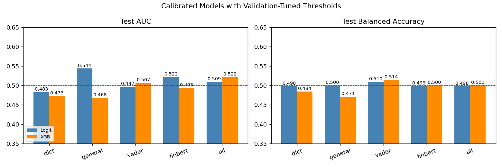

Programming
Python, R, SQL, Git, GitHub, Markdown, LaTeX
Data Science Portfolio
I am a dual-degree data science student focused on turning messy datasets into practical decisions. My recent work includes financial news sentiment analysis, class-imbalanced machine learning, and statistical communication for finance.
About
My strongest projects combine statistical reasoning with practical evaluation: cleaning real datasets, choosing leakage-aware validation designs, comparing models, and explaining when the evidence is limited. I am especially interested in data analyst, machine learning, business analytics, and finance-oriented data science work.
Technical Skills
Python, R, SQL, Git, GitHub, Markdown, LaTeX
pandas, NumPy, data cleaning, EDA, feature engineering, reproducible workflows
scikit-learn, XGBoost, Random Forest, Logistic Regression, LASSO, Naive Bayes, PCA
Dictionary sentiment, VADER, FinBERT, LDA topic modeling, text feature aggregation
Cross-validation, time-aware splits, threshold tuning, PR-AUC, F1, backtesting
Research reports, project posters, presentation dashboards, technical storytelling
Featured Projects
A group capstone project testing whether daily financial headlines contain useful information about next-day S&P 500 direction, returns, and simple long/flat trading performance.

A supervised learning project on UCI Bank Marketing data, focused on identifying likely term-deposit subscribers when the positive class is rare.
A literature-based statistical communication project explaining how excessive backtest trials can create false investment discoveries.
DATA 498 Portfolio Growth
Moved beyond a resume-style README into a structured project portfolio with evidence and links.
Included the backtest-overfitting poster to show research reading, critique, and visual explanation.
Linked the S&P 500 repository and contribution file to make my NLP role easy to verify.
Presented projects around reproducibility, technical decisions, model evaluation, and communication.
Leadership & Experience
Member and campus ambassador, organizing campus events and promoting career opportunities.
Head of Publicity Department from September 2023 to June 2025.
Level 1 certified instructor with experience in skill instruction and communication.
Contact